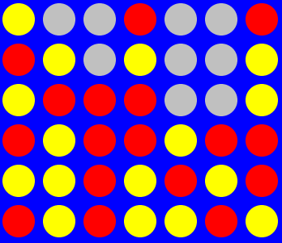

RL: Vier gewinnt ist ein Softwareprojekt, an dem ich im Wintersemester 2011/12 im Modul Projekt: Lernende Agenten des Studienganges Bachelor Angewandte Informatik (B-AI) gearbeitet habe.
Das Projekt beschäftigte sich damit mittels Verstärkendem Lernen (Englisch: Reinforcement Learning, kurz: RL) einem Computer das Spielen von Vier gewinnt beizubringen. Dies hat sich als unrentabel herausgestellt, weil die Datenbank die dafür notwendig wäre, durch den großen Zustandsraum, beim Training auf bis zu etwa 49,5 TiB anwachsen würde.
Ursprünglich wurde RL: Vier gewinnt im Sommersemester 2011 von Daniel Wehring erstellt. Dabei wurde das RL-Framework von Patrick Boekhoven verwendet, welches im Rahmen seiner Bachelor-Arbeit entstanden ist und das Agenten-Framework JADE verwendet.
Meine Arbeit an dem Projekt bestand hauptsächlich in einer ausführlichen Refaktorisierung[1]Sowohl in den RL-Algorithmen des RL-Frameworkes, als auch in der Anwendung für Vier Gewinnt, befanden sich schwerwiegende Fehler, wodurch das verstärkende Lernen nicht korrekt erfolgen konnte.
Beispielsweise existierte in der Berechnung der Vier Gewinnt Zustands-ID ein 64-bit Ganzzahlüberlauf, wodurch nicht alle Spielzustände eineindeutig adressiert wurden., Optimierung und ergänzender Dokumentation des Spieles und des RL-Frameworks.
Die Dokumentation meiner Arbeit für das Projekt ist hier zu lesen.
Am Ende des Projektes habe ich eine Präsentation für die Kursteilnehmer des nächsten Semesters gehalten, in der ich zunächst kurz Verstärkendes Lernen erklärt habe und anschließend RL: Vier gewinnt vorstellte.
| Sprachen | Java, UML |
|---|---|
| Technologien | JADE, Verstärkendes Lernen, Q-Learning, SARSA, Temporal difference learning |
| Tools | Dia, MediaWiki, Libre Office Impress |
| IDE | Eclipse |
| Beteiligte | 1 (2 gesamt) |

{kind=link}